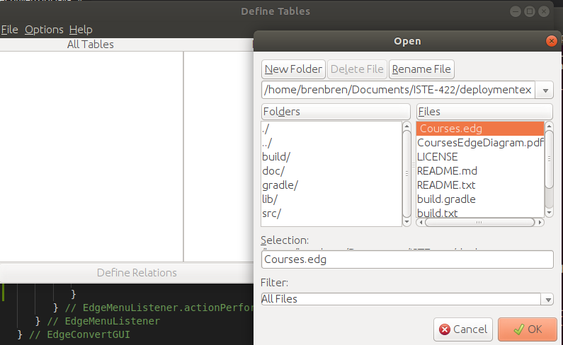
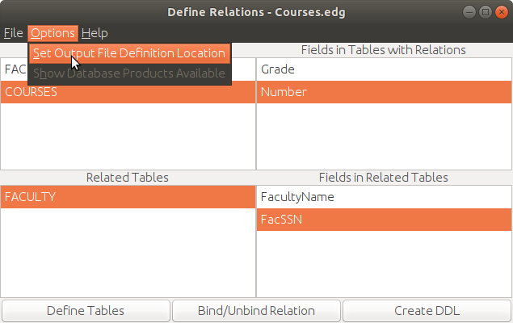
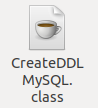
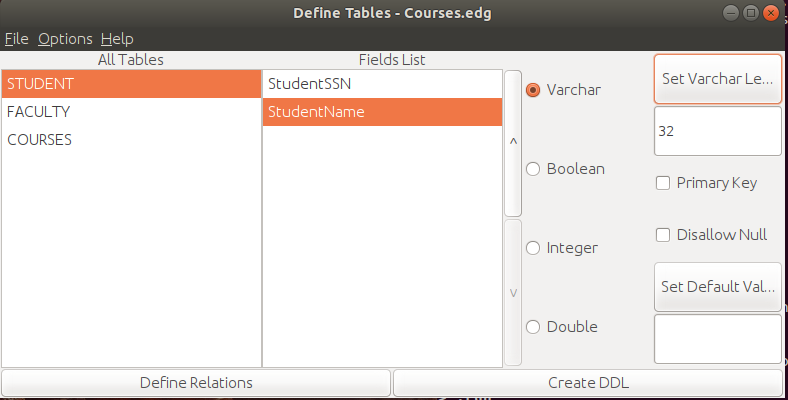
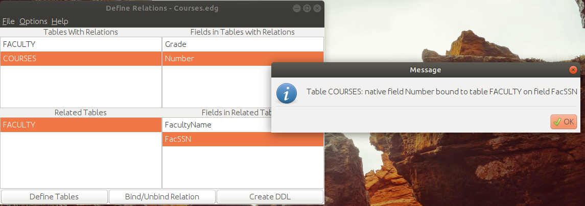
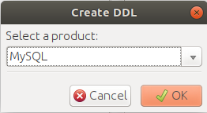
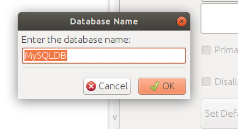
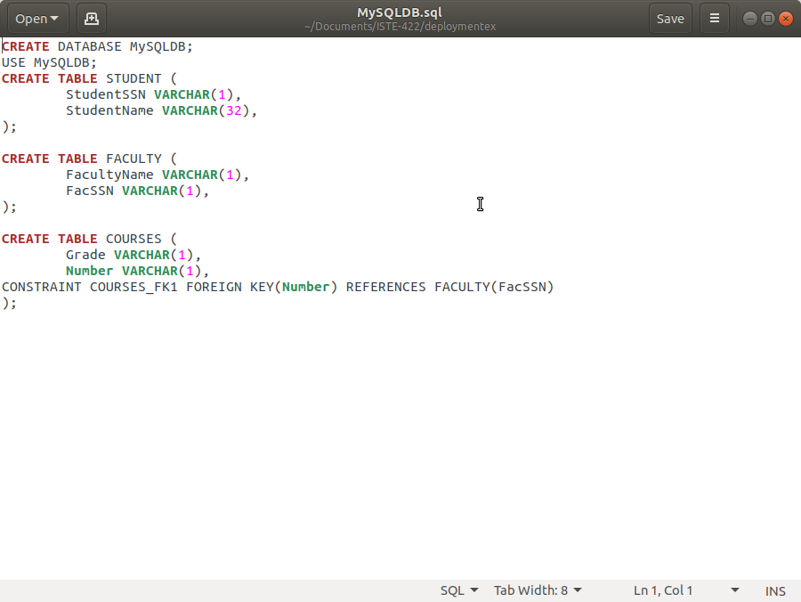

How To Write A Data Definition Language from a selected file:
This guide will walk you through taking an Edge file, loading it into the Data Definition Language(DDL) program,
selecting a database product to construct a new DDL with, and finally writing the new DDL to a new file.
In order to write a new DDL, ensure you have available: a source Edge (.edg) file and a Database Product Conversion Class file (.class)
First, we will open an Edge file we would like to convert. Select "Open Edge File" from the "File" menu and naviagte to your desired Edge file(.edg).

Open your desired Edge File
Next, we will be setting our DDL language conversion file location. Navigate to the "Options" menu and select "Set Output File Definition Location".

Select "Set Output File Definition Location"
From the file explorer, navigate to the directory which contains the class file(.class) of your Data Definition Language converter. this file will be located in a directory such as
"projectpath/build/classes/java/main/". In our case we will be targeting the file "CreateDDLMySQL.class" which is included standard with the software.
After selecting a class file a message will appear letting you know which DDL languages are available.

Select the needed DDL conversion class file from the "build" directory
If you wish to verify your loaded DDL languages, please see our Guide to viewing avaialable DDL products.
Next, define your desired table fields along with any desired table relations under the "Define Relations" and "Define Tables" menus.
Define tables:

Define your tables fields using the fields to the right of the selected table columns"
Define relations:

Define your desired table relations using the "Define Relations" menu
Once tables and relations have been defined, click the "Create DDL" button to begin the process of converting your Edge file to your desired DDL.
A small dropdown menu will appear asking you to select your desired language to convert to. We will be using MySQL in this example.

Select the desired DDL language
Next enter the name of your new database. Then select the desired location for saving the new DDL file.

Set your new database name
Once saved, you will now have a new file that can be used to establish a databse in your system of choice! To verify all went well, open the file you just created,
in our case "MySQLDB.sql".

Verify your new DDL file
Repeat this process for as many Edge files as needed!